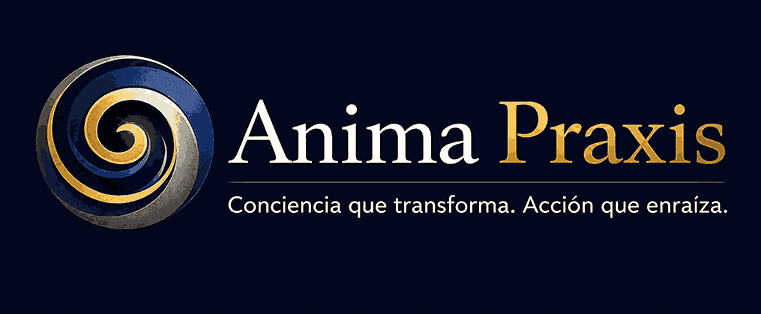
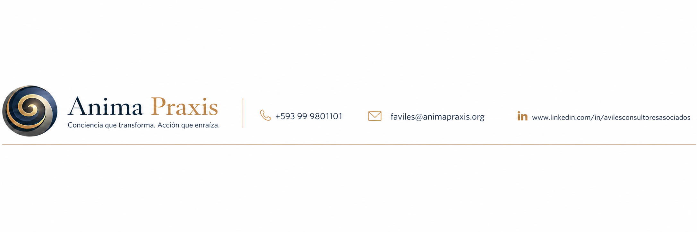

Prioridades claras
Identifique qué oportunidades aprovechar y qué vulnerabilidades atender primero.

DEMO COMERCIAL · SOFTWARE AS A SERVICE
Una metodología probada, el criterio de Francisco Avilés y la velocidad de la inteligencia artificial en una sola plataforma para MIPYMES.
La estrategia deja de ser un documento aislado y se convierte en un sistema vivo de decisiones y seguimiento.
Identifique qué oportunidades aprovechar y qué vulnerabilidades atender primero.
Alta Gerencia trabaja sobre una misma evidencia, lenguaje y ruta de decisión.
Cada hallazgo se conecta con objetivos, indicadores, responsables y fechas.
El plan se revisa, aprende y corrige sin perder la trazabilidad de lo acordado.
CUANDO NO HAY UNA RUTA COMÚN
Las MIPYMES no necesitan más información. Necesitan convertir lo que saben en decisiones coordinadas.
Muchas iniciativas compiten por los mismos recursos.
Las decisiones dependen de percepciones difíciles de contrastar.
Los problemas se atienden cuando ya son urgentes.
Los indicadores informan tarde y no conducen a una acción.
UN MODELO HÍBRIDO, NO UN CHATBOT GENÉRICO
Aporta contexto, evidencia y conocimiento del negocio. Construye aproximadamente el 80% de los insumos.
Organiza información, detecta inconsistencias y prepara matrices, enunciados y acciones como borradores.
Facilita el proceso, cuestiona supuestos y valida la coherencia antes de avanzar a cada etapa.
CASO FICTICIO PARA LA DEMOSTRACIÓN
Una MIPYME de logística internacional y comercio exterior que quiere crecer sin perder control operativo ni rentabilidad.
Organiza el contexto, solicita evidencias faltantes y configura las preguntas adecuadas para el sector.
Brindamos soluciones logísticas internacionales y de comercio exterior personalizadas para empresas que buscan conectar sus operaciones con nuevos mercados, mediante experiencia, alianzas confiables y mejora continua.
Para 2029 seremos una empresa logística regional rentable, reconocida por su trazabilidad digital, talento especializado y capacidad para acompañar el crecimiento internacional de sus clientes.
Anticipamos riesgos y cumplimos lo acordado con información oportuna.
Apoya misión + visiónDocumentamos aprendizajes y ajustamos procesos después de cada operación.
Apoya misión + visiónCompartimos información crítica entre áreas antes de tomar decisiones.
Apoya misiónF1Red de aliados internacionales consolidada
F2Equipo operativo especializado
F3Servicio flexible y personalizado
O1Crecimiento de empresas exportadoras
O2Expansión del comercio electrónico transfronterizo
O3Demanda de trazabilidad digital
D1Información operativa fragmentada
D2Concentración en pocos clientes
D3Continuidad operativa no formalizada
A1Presión competitiva sobre márgenes
A2Clientes exigen visibilidad en tiempo real
A3Disrupciones logísticas internacionales
| Fortaleza \ Oportunidad | O1 Exportadores | O2 E-commerce | O3 Trazabilidad | Total | Prioridad |
|---|---|---|---|---|---|
| F1 · Red internacional | 9 | 3 | 3 | 15 | P1 |
| F2 · Equipo especializado | 3 | 1 | 9 | 13 | P2 |
| F3 · Servicio flexible | 9 | 3 | 3 | 15 | P1 |
| Total | 21 P1 | 7 P2 | 15 P1 | ||
Paquetes sectoriales apoyados en la red internacional.
Unificar eventos, alertas y trazabilidad operativa.
Reducir exposición a clientes concentrados.
Incrementar la participación de clientes exportadores rentables.
LA ESTRATEGIA ACOMPAÑA AL EJECUTIVO
La integración MCP utiliza los mismos permisos, datos y reglas del producto web. No crea un backend paralelo.
UNA CONSULTORÍA QUE TRANSFIERE CAPACIDAD
La plataforma solicita información y organiza evidencias.
EMPRESA + IAEl equipo contrasta factores, relaciones y vulnerabilidades.
EQUIPO DE ALTO NIVELFrancisco facilita, cuestiona y valida la ruta metodológica.
CONSULTOR + ALTA GERENCIAResponsables actualizan acciones, indicadores y evidencias.
ORGANIZACIÓNLas revisiones convierten desviaciones en nuevas decisiones.
SISTEMA VIVOLA PLANIFICACIÓN NO ELIMINA LA INCERTIDUMBRE
Comenzar hoy permite que la próxima decisión importante se apoye en prioridades compartidas, evidencia y capacidad real de acción.
Reconocer dónde está el mayor potencial y la mayor exposición.
Asignar recursos y responsables a una ruta común.
Corregir antes, conservar decisiones y fortalecer la gestión.
EL SIGUIENTE PASO
Conozcamos el reto central de su empresa y evaluemos si este proceso es la ruta adecuada para su crecimiento sostenible.

← → avanzar o retroceder
Espacio siguiente escena
F pantalla completa
Inicio portada · Fin cierre
También puede hacer clic en los controles o deslizar en una pantalla táctil.